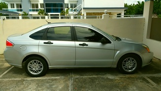
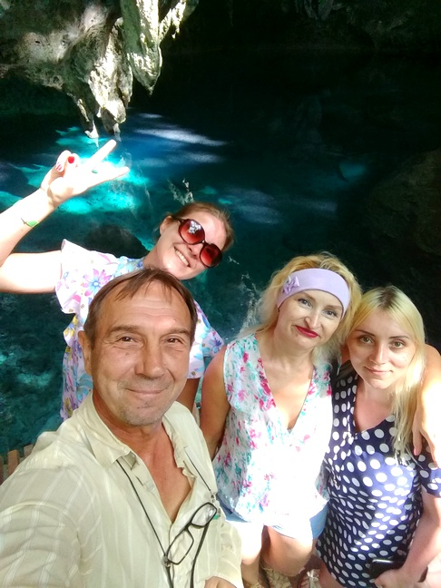
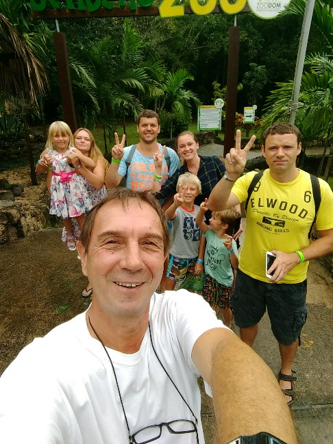
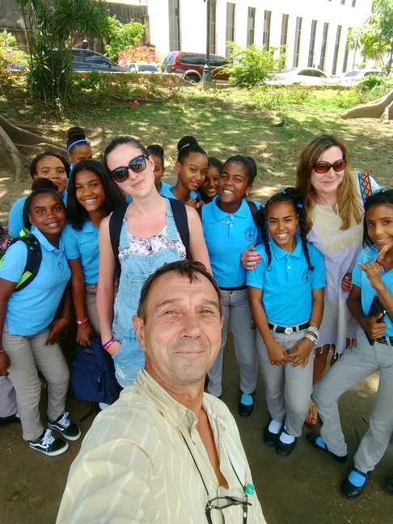
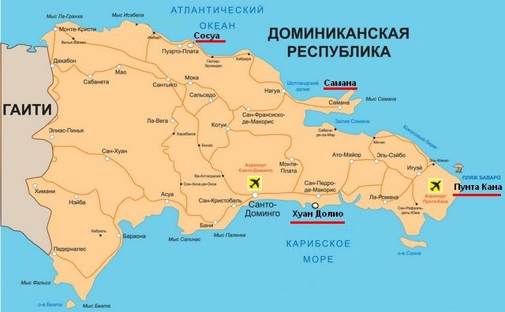

Мои услуги

Могу предложить свои услуги по индивидуальным экскурсиям и трансферу по острову. Возможны варианты поездок по вашим пожеланиям. Имею страховку и доминиканские права.
Для переезжающих в Доминикану или путешествующих самостоятельно - организую встречу в аэропорту, размещение в отеле, квартире.
Трансфер:
Хуан Долио - Пунта Кана (150км, 2ч) $150
Хуан Долио - Самана (200 км, 3ч) $250
Хуан Долио - Сосуа (300км, 4,5ч) $300
Предлагаю индивидуальные экскурсии в такие места, куда компании не возят туристов. Со мной вы сможете посетить Зоопарк, Ботанический сад, Национальный аквариум, побродить по столице по нетуристическим маршрутам, прокатиться в метро, перекусить в простом доминиканском кафе, увидеть местную жизнь без прикрас и почувствовать дух настоящей Доминиканы. Я могу свозить вас на мини-экскурсию в город Сан Педро де Макорис, где в супермаркете вы сможете закупиться ромом, кофе, какао, по самым низким ценам! При этом возможно посещение местного рынка, Пещеры Чудес и домашней табачной фабрики.




Мои тарифы
Аэропорт "Las Americas" - $50
Аэропорт "La Romana" -$70
Аэропорт "Punta Cana" - $150
Индивидуальные экскурсии - от $50 - до... ~ (зависит от маршрута).
Просмотры недвижимости, переговоры с продавцами, решение бытовых проблем - почасовая оплата.
Цены не фиксированные - к каждому клиенту находится индивидуальный подход.
Особые пожелания - по договорённости.
При вашем желании оформить вид на жительство в Доминиканской республике, при посещении адвоката, могу быть вашим сопровождающим, переводчиком.
Обращайтесь!
+1809.889.4417 WhatsApp Telegram
Если есть желание, можете почитать старую переписку с читателями *ГОСТЕВАЯ КНИГА*